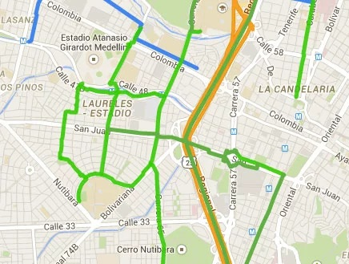

Introducción
En una ciudad en crecimiento como la nuestra, la movilidad sostenible se ha vuelto una
preocupación primordial. Uno de los desafíos más evidentes es la falta de una infraestructura
adecuada para ciclistas. A pesar del aumento en el número de personas que utilizan
bicicletas como medio de transporte, las ciclovías son insuficientes y en ocasiones poco
seguras. Esta problemática conlleva riesgos tanto para los ciclistas como para los
conductores de vehículos motorizados.
Mapeo y Planificación de Ciclovías
Zonas Peligrosas
Intersecciones Conflictivas
Cambios Climaticos
Comunidad Ciclista
Foro de Discusión
Únete a la conversación y comparte tus experiencias
y consejos con otros ciclistas urbanos.
Calendario de Eventos
Descubre los eventos relacionados con el ciclismo
en tu ciudad y participa en actividades emocionantes.